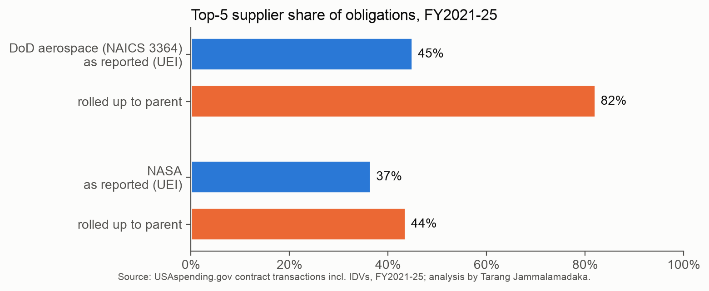

Supplier spend on real federal contract data. Tarang Jammalamadaka. Data: USAspending.gov, pulled October 2026.
Question. How dependent is government aerospace spend on a few suppliers, which contract types carry the money, and how much of it is competed?
Data. 874,769 contract transactions: every NASA contract action and every DoD action in aerospace product and parts manufacturing (NAICS 3364), FY2021 to FY2025, including obligations on IDVs. $600.9B in total ($499.4B DoD, $101.5B NASA). Every agency-year matches USAspending’s own total to the cent. Work type (R&D, products, services) comes from the product or service code. I rolled 11,227 supplier records (UEIs) up to parent companies with a 159-row crosswalk sourced to 10-K subsidiary lists and acquisition announcements; reviewed rows cover 93% of DoD dollars and 68% of NASA dollars.
Finding one: supplier records hide half the concentration. As reported, DoD’s largest aerospace supplier record holds 21% of obligations and the top five hold 45% (HHI 671). Rolled up to parent companies, Lockheed Martin holds 43%, the top five hold 82%, and HHI is 2,360. For a sense of scale only, the 2023 Merger Guidelines treat a market above 1,800 as highly concentrated; this is one buyer’s spend, not a market. Lockheed’s DoD spend is split across 47 supplier records; in FY2025 its largest record holds 26.3%, and all of them together hold 48.4%. NASA’s base is far less concentrated: top five 44%, HHI 489. The same holds one tier down, on Boeing’s side as a buyer: in the 18,758 first-tier subcontracts Boeing reported under its largest DoD awards ($19.4B), the biggest subcontractor record holds 8%, but RTX across its units holds 17%, and the top five rise from 29% to 41%.
Finding two: contract type follows the kind of work. DoD puts 77% of aerospace dollars on fixed-price contracts (46% on firm fixed price alone) but only 27% of R&D dollars; 73% of R&D is cost-reimbursement, while products are 84% fixed-price. NASA runs the other way: 66% cost-type overall and 78% of R&D. Time and materials barely registers: 0.1% at DoD and 0.4% at NASA. Fixed price puts overruns on the supplier, so development stays mostly cost-type; in its 10-K for 2025, Boeing reports $5,013 million of losses in 2024 on its five major fixed-price development programs. Of DoD’s $8.4B of fixed-price aerospace R&D, Lockheed holds 51%, Textron 31% and Boeing 11%.
Finding three: most DoD aerospace dollars are not competed. 87% of DoD obligations were not competed, and 78% of those cite “only one source” (FAR 6.302-1). For Lockheed Martin the not-competed share is 95%. At NASA it is 31%.
What I would do next as a buyer. First, measure supplier exposure at the parent level; the record level understates it by about half. Second, where competition is not available, the leverage moves to price analysis and contract terms, so track sole-source spend by supplier and contract type. Third, flag fixed-price development work for extra cost and schedule review.
Limits. These are obligations, net of deobligations, not outlays. NAICS 3364 is a conservative boundary: defining DoD aerospace by product codes instead raises the FY2025 top-five record share from 52% to 60%. Each supplier record gets one parent, today’s owner, for every year (Aerojet Rocketdyne counts under L3Harris), which lifts early-year concentration slightly; USAspending’s own parent field changes with each action and its FFRDC flag misses JPL, so both were corrected from primary sources. NASA puts 23.9% of its dollars directly on IDVs (DoD obligates on the orders placed under them), so leaving IDVs out would undercount NASA. Subcontract figures are Boeing’s own first-tier reports.
